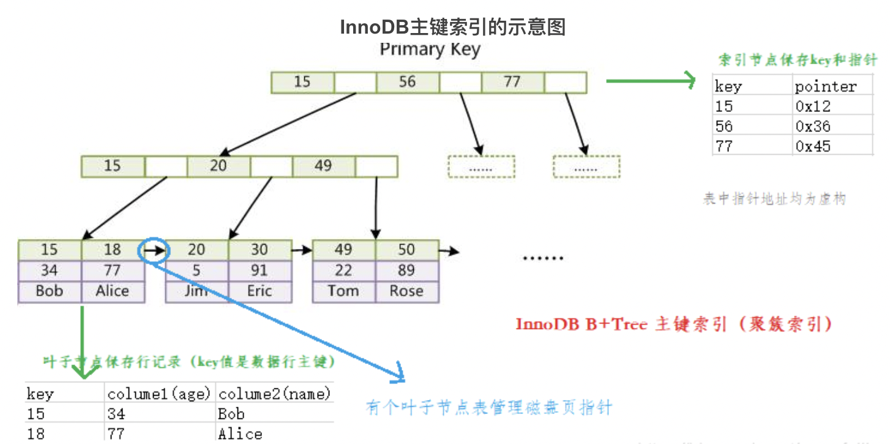
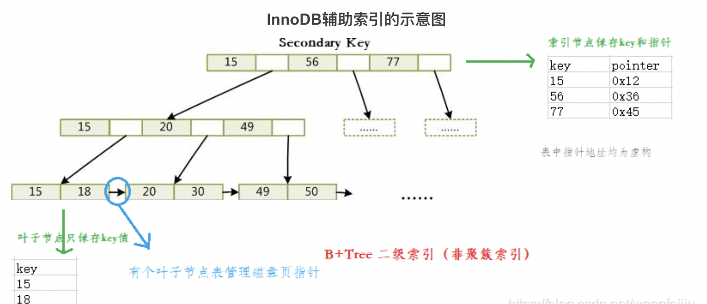
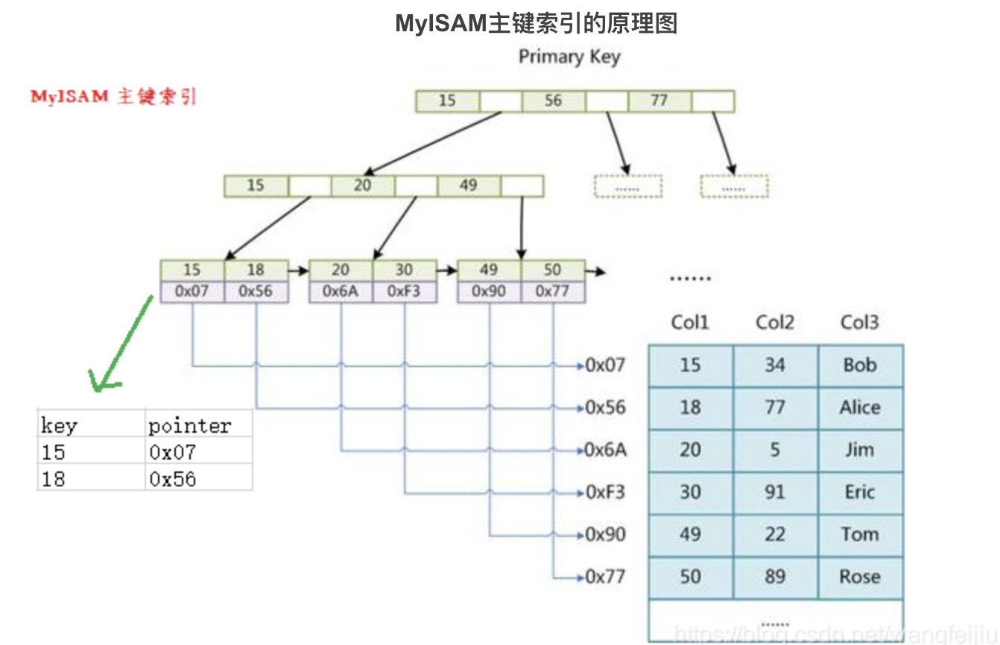
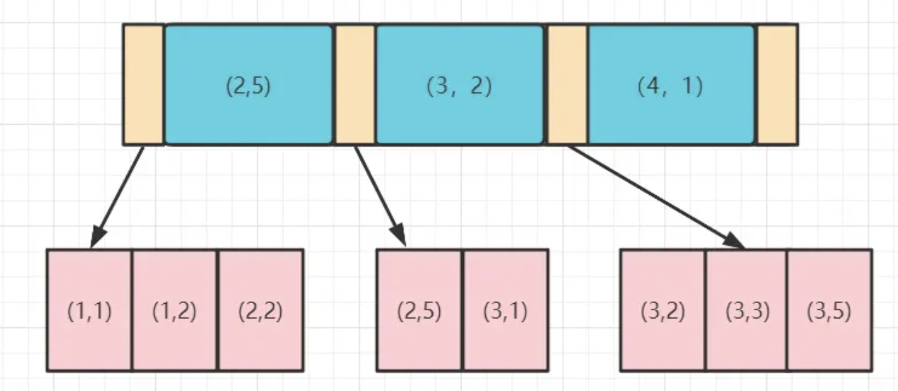

MySQL-索引
1. 什么是索引
索引是对数据库表中一列或多列值进行排序的一种结构。MySQL索引的建立对MySQL的高效运行是很重要的，可以大大提高检索速度。
2. 索引的优缺点
如果索引可以大大提高检索效率，为什么不对表中每一个列创建一个索引呢？
优点：
- 索引大大减小了服务器需要扫描的数据量，从而大大加快数据的检索速度。
- 索引可以帮助服务器避免排序和创建临时表。
- 索引可以将随机IO变成顺序IO。
- 索引对InnoDB的行级锁来说，可以提高表访问的并发性。
- 通过创建唯一性索引，可以保证数据库表中每一行数据的唯一性。
- 可以加速表和表之间的连接。
但也有缺点：
- 创建和维护索引需要耗费时间，且时间随着数据量的增加而增加。
- 每一个索引需要占用一定物理空间，如果需要建立聚簇索引，则占用空间会更大。
- 对表中数据进行增删改查时，索引也要动态地维护，降低了整数的维护速度。
- 对于非常小的表，大部分情况下简单的全表扫描更高效。
3. 创建索引的准则
应该创建索引的列：
- 经常需要搜索的列，可以加快搜索的速度。
- 作为主键的列，强制该列的唯一性和组织表中数据的排列结构。
- 经常用在 JOIN 连接的列，加快连接的速度。
- 经常需要根据范围进行搜索的列（<, <=, =, >, >=, BETWEEN, IN），因为索引已经排序，其指定的范围是连续的。
- 经常需要排序（order by）的列，因为索引已经排序，可以加快排序查询时间。
- 经常使用在 WHERE 子句中的列，加快条件的判断速度。
不该创建索引的列：
- 在查询中很少使用或参考的列。
- 只有很少数据值或重复值多的列，如性别列。
- 数据类型为text / image / bit的列，这些列的数据量要么相当大，要么取值很少。
- 当该列修改性能要求远远高于检索性能时，不该创建索引。（修改性能和检索性能是相互矛盾的）
4. 索引结构
MySQL中常用的索引结构（索引底层的数据结构）有：B-TREE / B+Tree / HASH 等。
- B-TREE，B树，多路搜索树，树高一层意味着多一次的磁盘IO。
B树的特征：
- 关键字集合分布在整棵树中。
- 任何一个关键字出现且只出现在一个结点中。
- 搜索有可能在非叶子结点结束。
- 搜索性能等价于在关键字全集内做一次二分查找。
- 自动层次控制。
- B+TREE，B+树，是B树的变体，也是一种多路搜索树。
B+树的特征：
- 所有关键字都出现在叶子结点的链表中（稠密索引），且链表中的关键字是有序的。
- 不可能在非叶子结点命中。
- 非叶子结点相当于叶子结点的索引（稀疏索引），叶子结点相当于存储数据（关键字）的数据层。
- 每一个叶子结点都包含指向下一个叶子结点的指针，方便叶子结点的范围遍历。
- 更适合文件索引系统。
- HASH，哈希索引，就是采用一定的哈希算法，把键值换算成新的哈希值，检索时不需要类似B+树那样从根结点到叶子结点逐级查找，只需一次哈希算法即可立即定位到相应的位置，速度非常快。由于哈希索引比较的是进行哈希运算后的哈希值，所以它只能用于等值的过滤，不能用于基于范围的过滤。
5. 索引分类
MySQL的索引有两种分类方式：逻辑分类和物理分类。
5.1 逻辑分类
逻辑分类又可以分为按功能划分、按组成索引的列数划分等。
按功能划分：
- 主键索引：一张表只能有一个主键索引，不允许重复，不允许为NULL。
- 唯一索引：数据列不允许重复，允许为NULL，一张表可以有多个唯一索引。如果是组合索引，则列值的组合必须是唯一。
- 普通索引：一张表可以创建多个普通索引，一个普通索引可以包含多个字段，允许重复，允许NULL值。
- 全文索引：它查找的是文本中的关键词，主要用于全文搜索。
按列数划分：
- 单列索引：一个索引只包含一个列，一个表可以有多个单列索引。
- 组合索引：一个组合索引包含两个或以上的列。查询时遵循最左匹配原则，即使用where时，条件要按照建立索引时字段的排列方式放置，索引才会生效。
5.2 物理分类
分为聚簇索引和非聚簇索引。
- 聚簇索引：不是单独的一种索引类型，而是一种数据存储方式，依靠B+树来实现，根据表的主键构造一颗B+树，且叶子结点存放的都是表的行记录数据时，方可称该主键索引为聚簇索引。也可以理解为将数据存储与索引放到了一块，找到索引也就找到了数据。
- 非聚簇索引：数据和索引是分开的，B+树叶子结点存放的不是数据表的行记录。
虽然InnoDB和MyISAM都默认使用B+树存储索引，但只有InnoDB的主键索引才是聚簇索引。
每张表最多只能拥有一个聚簇索引。
聚簇索引优点：
- 数据访问更快，因为聚簇索引将索引和数据保存在同一个B+树中，因此从聚簇索引中获取数据比非聚簇索引更快。
- 聚簇索引对于主键的排序查找和范围查找速度非常快。
缺点：
- 插入速度严重依赖于插入顺序，按照主键的顺序插入是最快的方式，否则会出现页分裂，严重影响性能。因此，对于InnoDB表，我们会定义一个自增的ID列为主键。
- 更新主键的代价很高，因为会导致被更新的行移动，因此对于InnoDB表，我们一般定义主键为不可更新。
- 二级索引访问需要两次索引查找，第一次找到主键值，第二次根据主键值找到行数据。
6. InnoDB和MyISAM索引实现
6.1 InnoDB索引实现
6.1.1 聚簇索引 / 主键索引
B+树叶子结点包含数据表中行记录就是聚簇索引。（索引和数据存放在一起）

可以看到叶子结点包含了完整的数据记录，这就是聚簇索引。
注意：
- B+树单个叶子结点内的行数据按照主键顺序排列，物理空间是连续的。（聚簇索引的数据的物理存放顺序与索引顺序是一致的）
- 叶子结点之间通过指针连接，相邻叶子结点的数据在逻辑上也是连续的（根据主键值排序），实际存储时的叶子结点可能相距甚远。
6.1.2 非聚簇索引 / 辅助索引
在聚簇索引之外创建的索引，即不是根据主键创建的，称为辅助索引。辅助索引访问数据总是需要二次查找。辅助索引叶子结点存储的不是行数据记录，而是主键值。首先通过辅助索引找到主键值，再到主键索引树中通过主键值找到数据行。（InnoDB一定会有主键索引）

6.1.3 InnoDB索引优化
InnoDB主键不宜定义太长（太大）：因为普通索引（辅助索引）的叶子结点存储的是主键值，普通索引查询时先查询主键，再从主键索引上二次遍历索引树。比如现在要存储居民的身份信息，如果以身份证为主键，身份证id_code是一个比较长的字符串，每个普通索引都存储这个值，在数据量大，内存珍贵的情况下，MySQL有限的缓冲区，存储的索引与数据会减少，磁盘IO的概率会增加。应该定义一个无业务含义的id自增列作为主键。
InnoDB中尽量不使用非单调字段作为主键：因为InnoDB数据文件本身是一颗B+树，非单调的主键会造成在插入新纪录时，数据文件为了维持B+树的特性而频繁分裂调整，十分低效。应该使用自增字段作为主键。
6.2 MyISAM索引实现
MyISAM也使用B+树作为索引结构，但实现方式和InnoDB完全不同。MyISAM使用的都是非聚簇索引。
6.2.1 主键索引

叶子结点存放的是数据记录的地址，即索引和行数据记录没有保存在一起，所以MyISAM的主键索引是非聚簇索引。
6.2.2 辅助索引
MyISAM的主键索引和辅助索引在结构上没有区别，只不过主键索引要求key唯一，而辅助索引的key可以重复。MyISAM的辅助索引也是非聚簇索引。
6.3 聚簇索引和非聚簇索引的区别
- 聚簇索引的叶子结点存放的是数据行，支持覆盖索引。非聚簇索引的叶子结点存放的是主键值或指向数据行的指针。
- 由于叶子结点（数据页）只能按一颗B+树排序，故一张表只能有一个聚簇索引。非聚簇索引的存在不影响聚簇索引中数据的组织，所以一张表可以有多个非聚簇索引。
7. 操作索引
1 | # 创建索引 |
8. 最左前缀原则
在MySQL建立联合索引时，会遵守最左前缀原则。即最左优先，以最左边的为起点，任何连续的索引都能匹配上，同时遇到范围查询（>, <, between, like）就会停止匹配。
比如有联合索引 (a, b, c)，where过滤条件中那些排列组合可以用到索引？（如 where a = xxx b = xxx and c = xxx）
以下排列组合会走索引：a / ab / ac / ba / ca / abc / acb / bac / bca / cab / cba。即必须要有一个a，排列组合中的顺序会被优化器优化，所以不用关心顺序。
以下排列组合不会走索引：b / c / bc / cb。因为没有a。
a = xxx and b < 10 and b > 5 and c = xxx 这种情况，c字段用不到索引，因为b是一个范围查询，遇到范围查询就停止匹配了。
8.1 最左前缀原则原理
索引的底层是一颗B+树，联合索引当然也是一颗B+树，只不过联合索引的键值数量不是一个而是多个。构建一颗B+树只能根据一个值来构建，因此数据库依据联合索引最左的字段来构建B+树。
假如创建一个 (a, b) 的联合索引，那么它的索引树是这样的：

可见a的值是有顺序的：1, 1, 2, 2, 3, 3, 3, 3。b的值是没有顺序的：1, 2, 2, 5, 1, 2, 3, 5。所以 b = 2 这种查询条件无法利用索引，因为联合索引首先是按a排序的，b是无序的。
同时我们可以发现，在a值相等的情况下，b值又是按顺序排列的，这种顺序是相对的。所以最左前缀原则遇上范围查询就会停止，剩下的字段都无法使用索引。例如a = 1 and b = 2，a和b字段都可以使用索引，因为在a值确定的情况下b值是相对有序的；而a > 1 and b = 2，a字段可以匹配上索引，但b值不可以，因为a值是一个范围，在这个范围中b是无序的。
9. 覆盖索引
索引是一个高效找到行数据的方法，当我们select想要查询的数据通过检索索引就能取得，不必再到数据表中读取，即建立索引的字段正好是select子句和where子句涉及的字段（包含或覆盖），也即，索引包含了查询正在查找的所有数据，这就叫覆盖索引。
10. 回表
以InnoDB的辅助索引为例，查完索引后还要去主键索引树二次查找。
通俗地讲就是，如果select所需获得的列中有大量的非索引列，索引就需要到表中二次查找获得相应的列的信息，这就叫回表。
我们应该避免回表，方法就是使用覆盖索引，即索引中包含了查询中的所有字段。如果索引的列在select所需获得的列中，或者根据一次索引查询就能获得记录，这种情况就不需要进行回表查询了。
11. 索引下推
索引下推 / Index Condition Pushdown / ICP，是MySQL 5.6后的新特性。
举例说明：现有表person，其中有3个字段，id name age ，其中id为主键，创建联合索引 (name, age)。
表中有两条数据：{2, ab, 2} 以及 {15, ab, 15}。现在我们要检索出名字为ab且年龄为2的用户。sql语句：select * from person where name = 'ab' and age = 2。
不使用索引下推的话，存储引擎根据联合索引找到 name = ‘ab’ 的主键id (2, 15)，逐一进行回表扫描，去聚簇索引找到完整的行记录，再对数据根据 age = 2 进行筛选。则进行了两次回表，把联合索引的另一个字段age浪费了。
使用索引下推的话，存储引擎根据联合索引，找到 name = ‘ab’，由于联合索引包含age列，所以存储引擎直接在联合索引里根据 age = 2 筛选，判断后再进行回表查询。即只进行了一次回表。